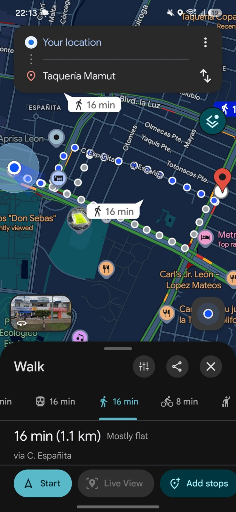
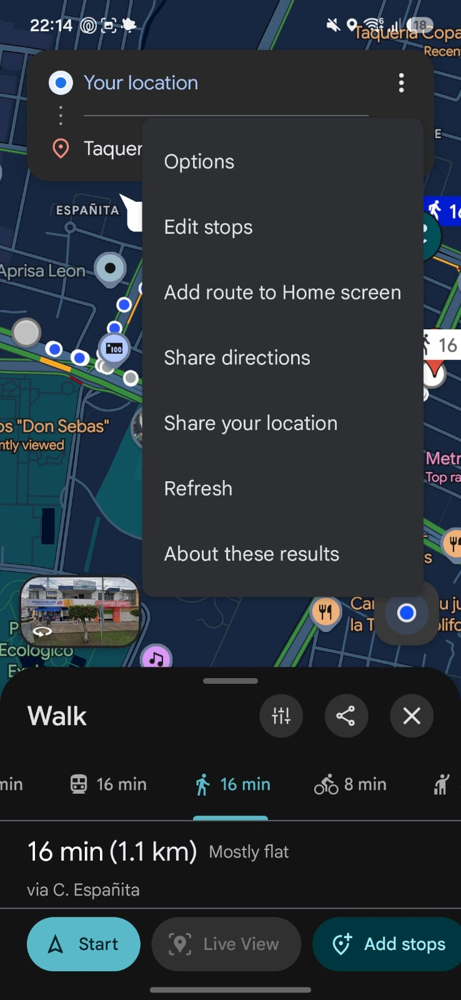
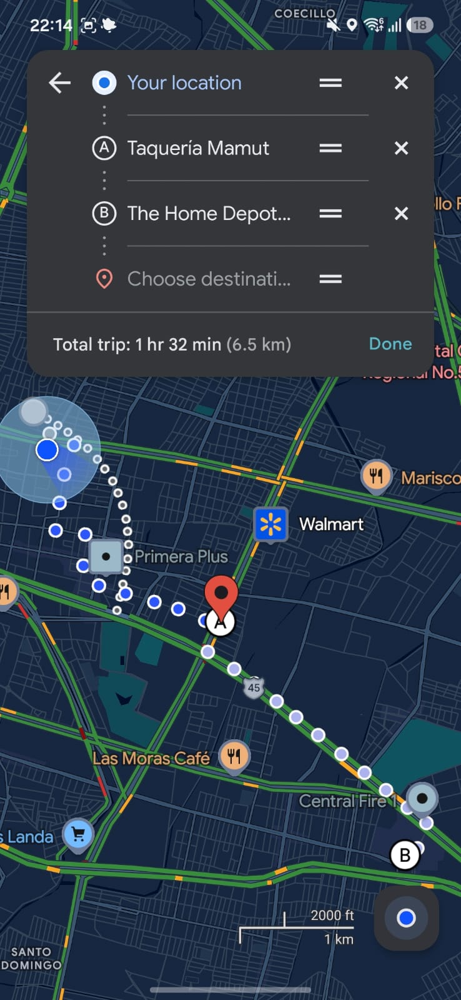
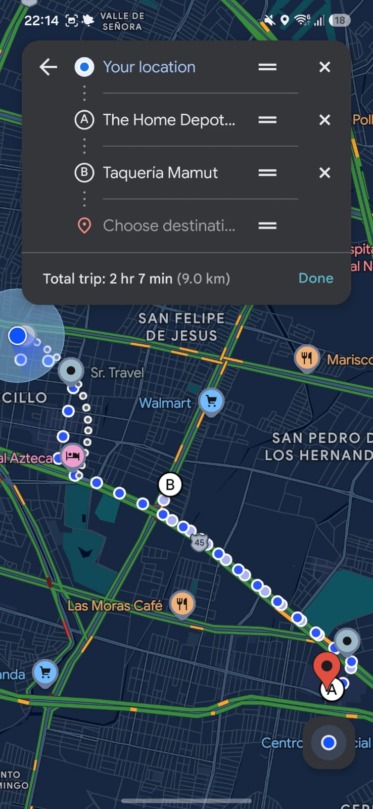
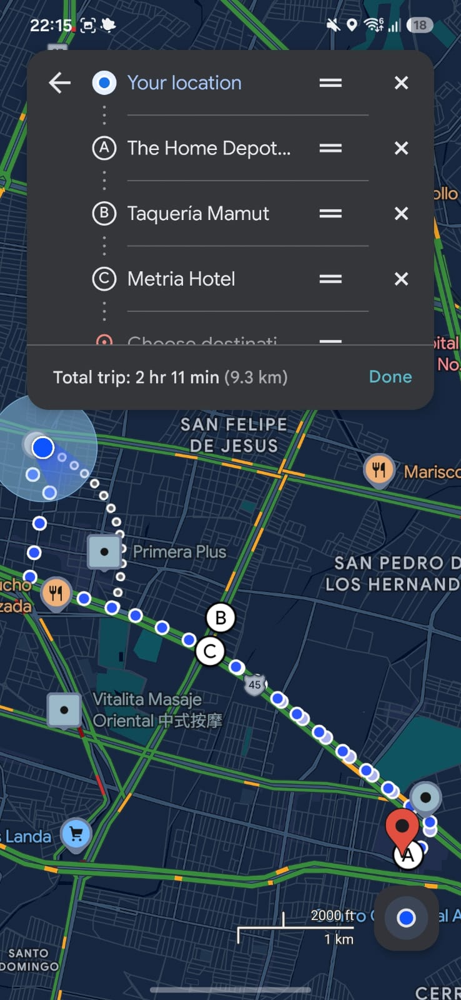
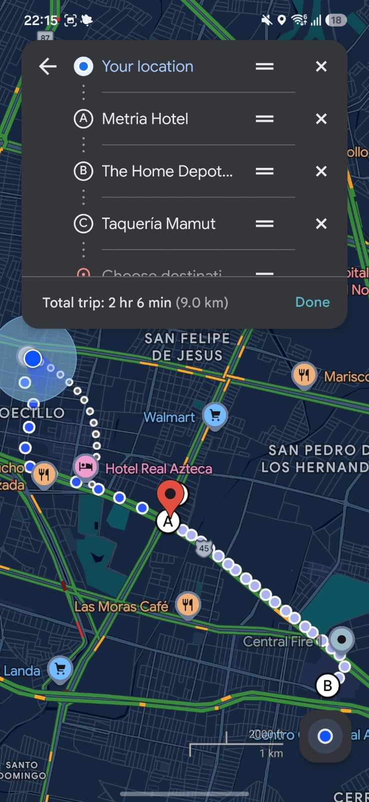
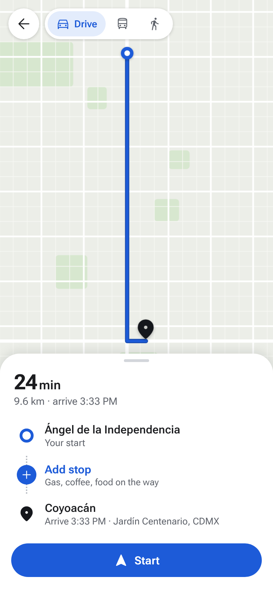
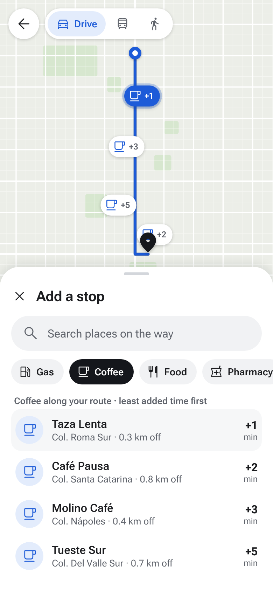
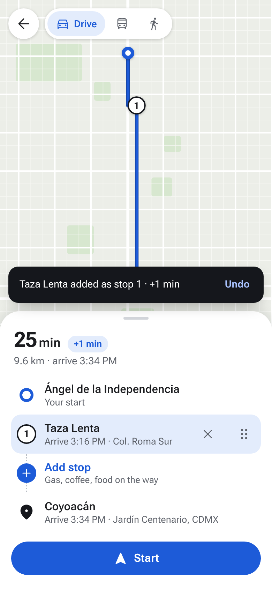
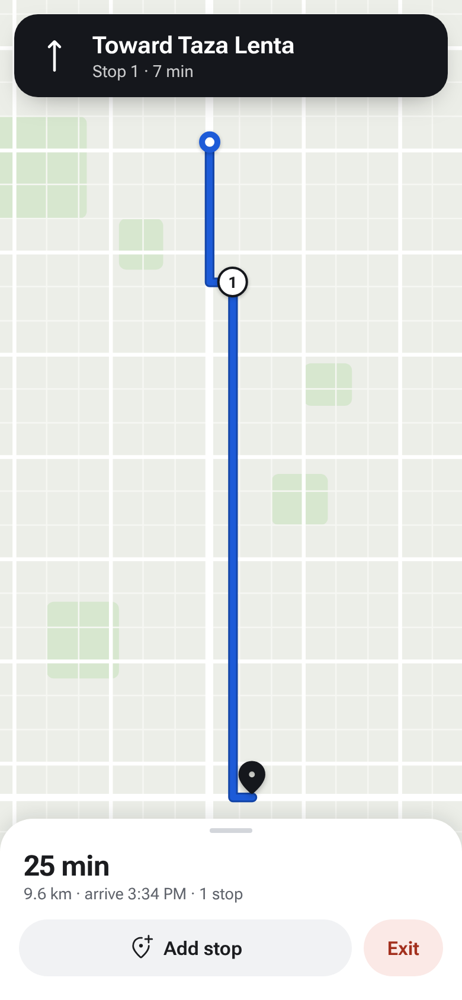

Main Menu | Labs | Document | Prototype
App: Google Maps. Feature: Add a stop. I documented how a stop is added to a route today, analyzed the experience and designed a new flow that takes 2 steps instead of 5 to 6.
Student project for a UX/UI class. Not affiliated with or endorsed by Google. The screenshots show the real app; the proposal and prototype are my own mockups.
Google Docs link: https://docs.google.com/document/d/1-zL1FO2abofV1wmi1WR2STwR0yaV2QszB_UqbsDHkco/edit?usp=sharing
Route preview → ⋮ menu → Edit stops → Choose destination → Drag to reorder → Done






Just 2 steps: Add stop → Tap a place




Tap Add stop, pick a category and tap a place.